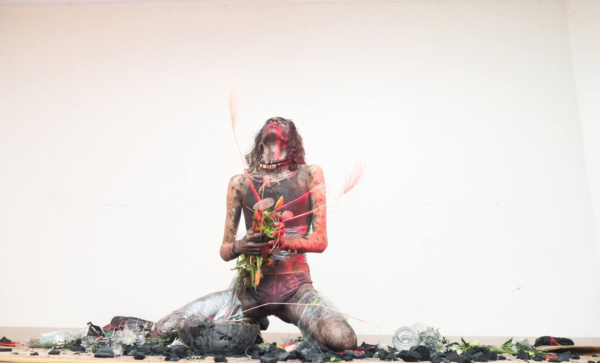
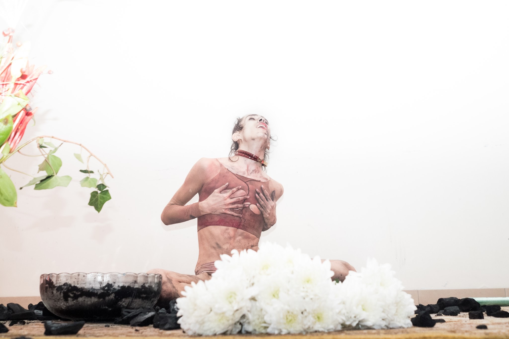
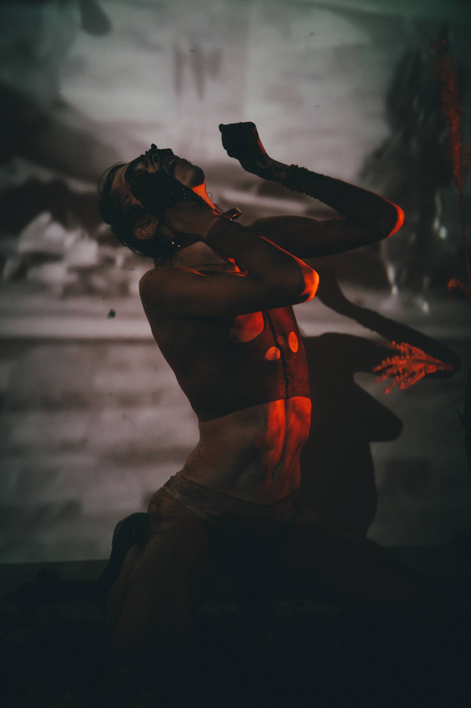
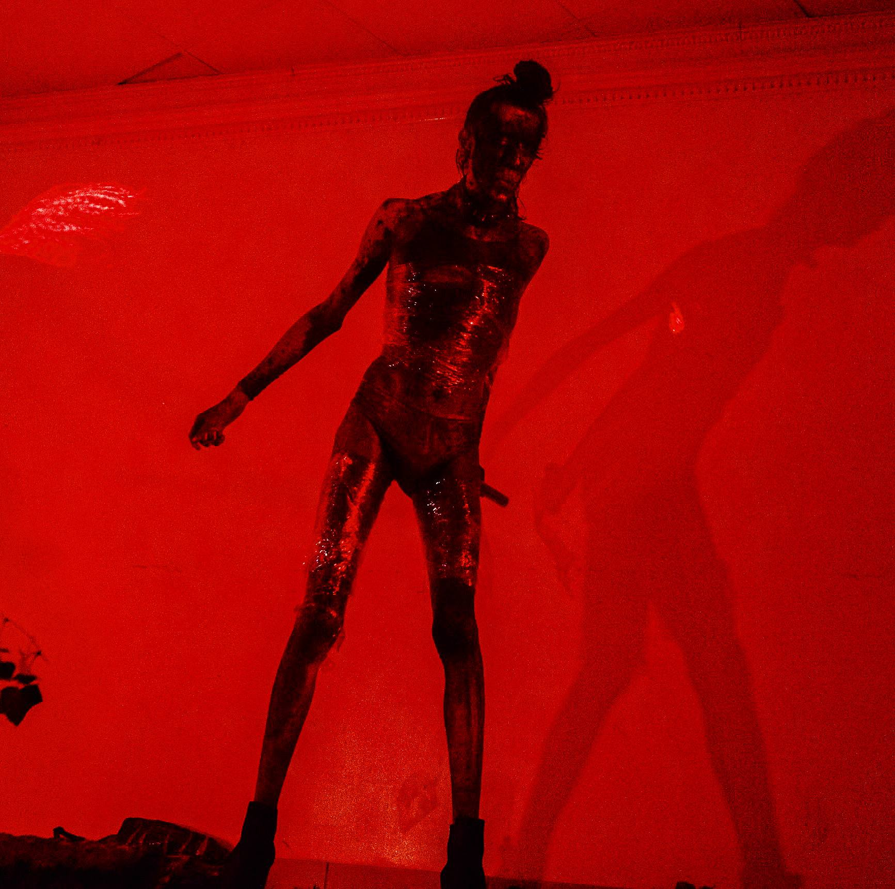
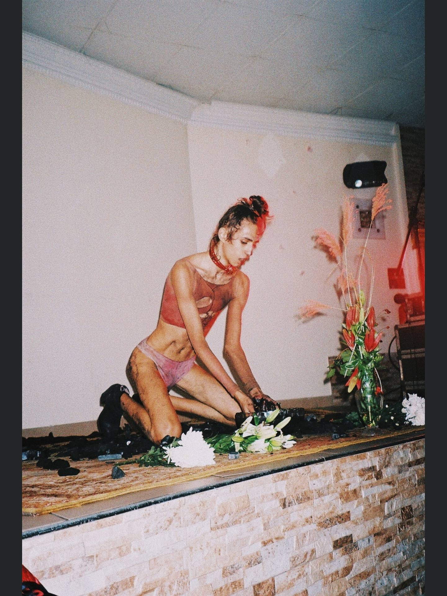
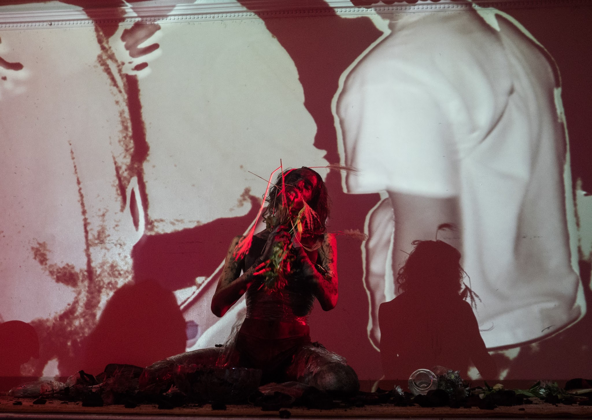
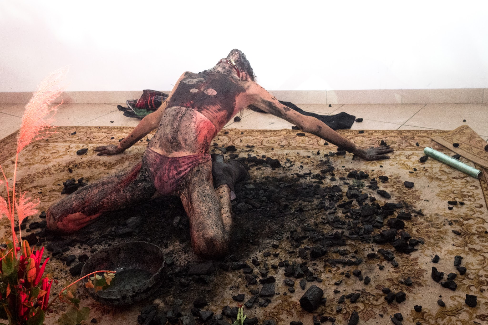

La dépression n'est pas une maladie propre. Ce n'est pas non plus une métaphore.
Depression is not a clean illness. Nor is it a metaphor.
C'est un état liminaire, ni mort ni vivant, ni dedans ni dehors, où le temps se suspend et où le corps devient étranger à lui-même.
It is a liminal state, neither dead nor living, neither inside nor outside — where time suspends and the body becomes foreign to itself.


Depression Purgatory est né de ça : pas d'une distance artistique, pas d'un regard rétrospectif apaisé, mais de l'intérieur même de cet espace intermédiaire, entre l'ombre et une lumière qu'on n'atteint pas encore.
Depression Purgatory was born from there: not from an artistic distance, not from a soothed retrospective gaze, but from inside this in-between space itself — between shadow and a light not yet reached.
La performance ne cherche pas à guérir ni à expliquer. Elle cherche à traverser, à rendre visible ce qui résiste à la représentation, ce que la honte et le silence organisent soigneusement.
The performance does not seek to heal or explain. It seeks to cross through — to make visible what resists representation, what shame and silence so carefully organise.




La souffrance comme matière brute. La scène comme seul endroit où elle peut exister sans être réduite.
Suffering as raw material. The stage as the only place where it can exist without being reduced.